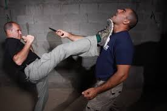

Krav Maga is known for its focus on real world situations and its extreme effciency. Hebrew for "contact-combat" is a military self-defence and fighting system developed for the Israel Defense Forces (IDF) and Israeli security forces (Shin Bet and Mossad) that derived from a combination of techniques sourced from Boxing, Wrestling, Aikido, Judo and Karate, along with realistic fight training.
